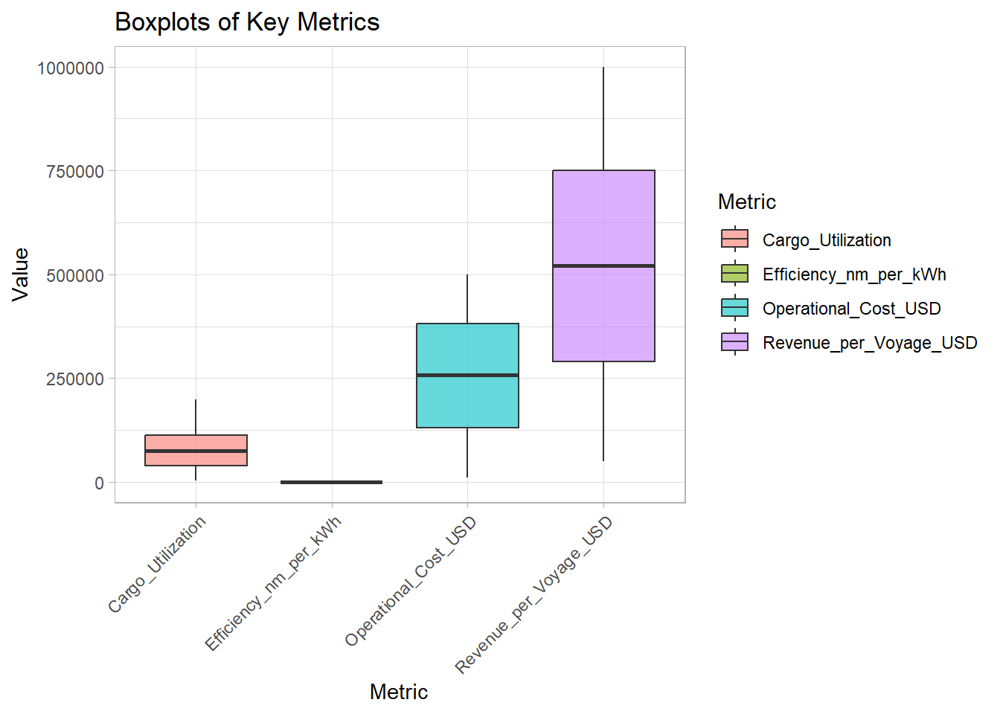
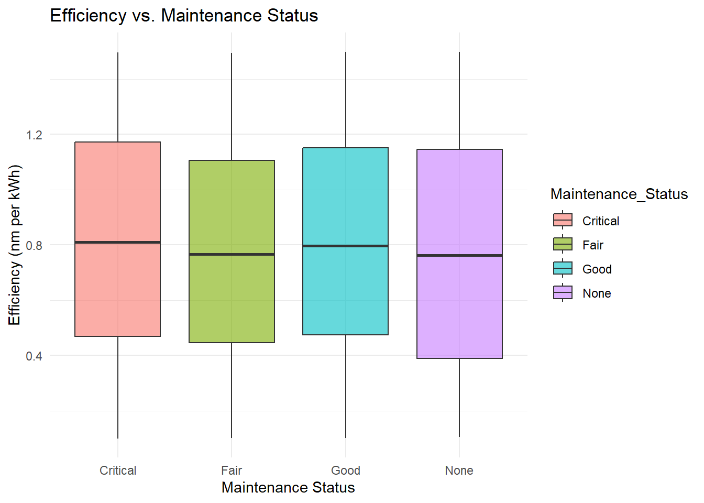
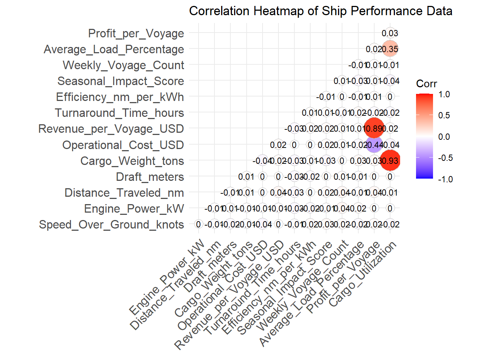
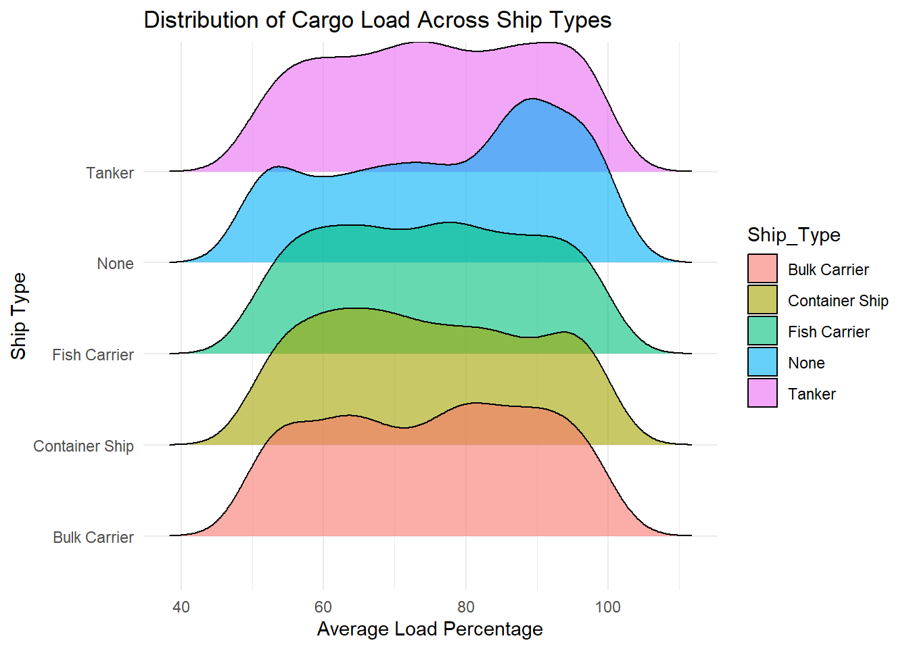
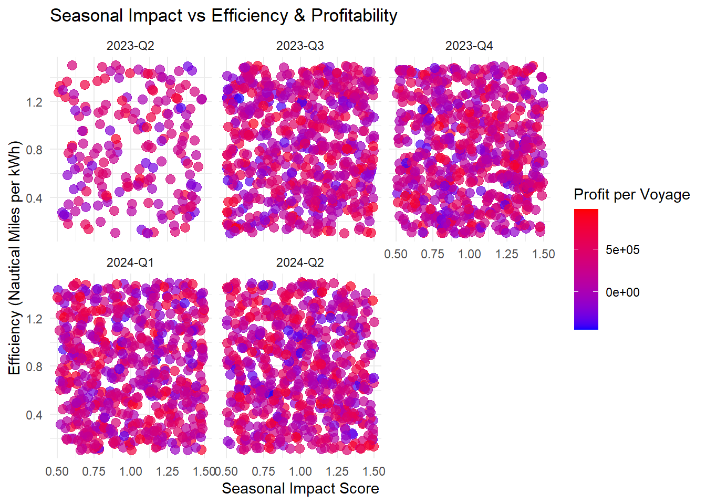
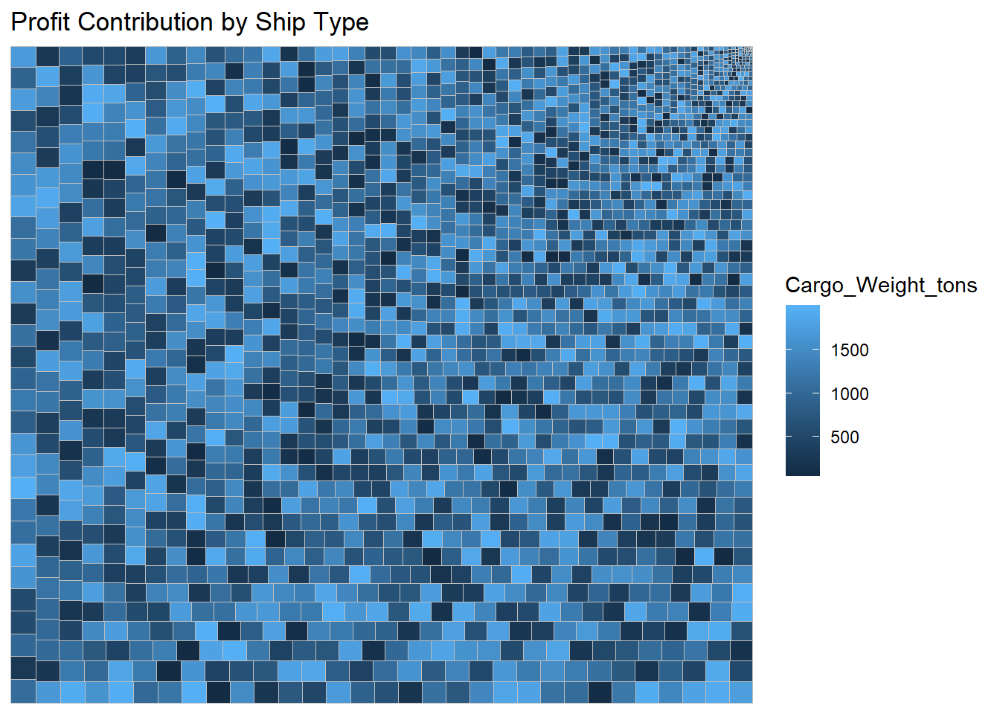
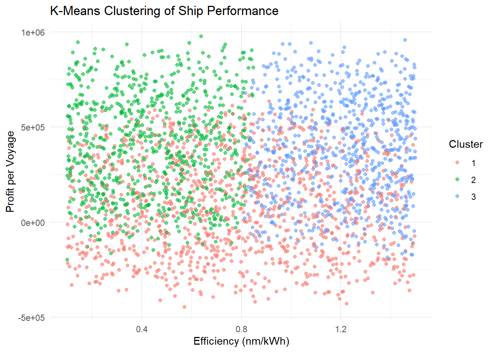

pacman::p_load(tidyverse,dplyr,lubridate,ggplot2,tidyr,treemap, ggridges,ggcorrplot,ggstatsplot,GGally,treemapify) Take home exercise 01
- Preparing Data
1.2 Installing and loading the packages
1.3 Data Preparation
shipperformance <- read_csv("Ship_Performance_Dataset.csv")Rows: 2736 Columns: 18
── Column specification ────────────────────────────────────────────────────────
Delimiter: ","
chr (5): Ship_Type, Route_Type, Engine_Type, Maintenance_Status, Weather_C...
dbl (12): Speed_Over_Ground_knots, Engine_Power_kW, Distance_Traveled_nm, D...
date (1): Date
ℹ Use `spec()` to retrieve the full column specification for this data.
ℹ Specify the column types or set `show_col_types = FALSE` to quiet this message.1.4 check the data type
str(shipperformance) spc_tbl_ [2,736 × 18] (S3: spec_tbl_df/tbl_df/tbl/data.frame)
$ Date : Date[1:2736], format: "2023-06-04" "2023-06-11" ...
$ Ship_Type : chr [1:2736] "Container Ship" "Fish Carrier" "Container Ship" "Bulk Carrier" ...
$ Route_Type : chr [1:2736] "None" "Short-haul" "Long-haul" "Transoceanic" ...
$ Engine_Type : chr [1:2736] "Heavy Fuel Oil (HFO)" "Steam Turbine" "Diesel" "Steam Turbine" ...
$ Maintenance_Status : chr [1:2736] "Critical" "Good" "Fair" "Fair" ...
$ Speed_Over_Ground_knots: num [1:2736] 12.6 10.4 20.7 21.1 13.7 ...
$ Engine_Power_kW : num [1:2736] 2063 1796 1649 915 1090 ...
$ Distance_Traveled_nm : num [1:2736] 1031 1060 659 1127 1445 ...
$ Draft_meters : num [1:2736] 14.13 14.65 7.2 11.79 9.73 ...
$ Weather_Condition : chr [1:2736] "Moderate" "Rough" "Moderate" "Moderate" ...
$ Cargo_Weight_tons : num [1:2736] 1959 162 178 1737 261 ...
$ Operational_Cost_USD : num [1:2736] 483832 483388 448543 261350 287718 ...
$ Revenue_per_Voyage_USD : num [1:2736] 292183 883766 394019 87551 676121 ...
$ Turnaround_Time_hours : num [1:2736] 25.9 63.2 49.4 22.4 64.2 ...
$ Efficiency_nm_per_kWh : num [1:2736] 1.455 0.29 0.5 0.703 1.331 ...
$ Seasonal_Impact_Score : num [1:2736] 1.416 0.886 1.406 1.371 0.583 ...
$ Weekly_Voyage_Count : num [1:2736] 1 6 9 1 8 7 3 6 8 2 ...
$ Average_Load_Percentage: num [1:2736] 93.8 93.9 96.2 66.2 80 ...
- attr(*, "spec")=
.. cols(
.. Date = col_date(format = ""),
.. Ship_Type = col_character(),
.. Route_Type = col_character(),
.. Engine_Type = col_character(),
.. Maintenance_Status = col_character(),
.. Speed_Over_Ground_knots = col_double(),
.. Engine_Power_kW = col_double(),
.. Distance_Traveled_nm = col_double(),
.. Draft_meters = col_double(),
.. Weather_Condition = col_character(),
.. Cargo_Weight_tons = col_double(),
.. Operational_Cost_USD = col_double(),
.. Revenue_per_Voyage_USD = col_double(),
.. Turnaround_Time_hours = col_double(),
.. Efficiency_nm_per_kWh = col_double(),
.. Seasonal_Impact_Score = col_double(),
.. Weekly_Voyage_Count = col_double(),
.. Average_Load_Percentage = col_double()
.. )
- attr(*, "problems")=<externalptr> —all the data type are correct
1.5 Cheek the missing value
char_cols <- sapply(shipperformance, is.character)
num_cols <- sapply(shipperformance, is.numeric)
none_count <- colSums(shipperformance[, char_cols] == "None")
na_count <- colSums(is.na(shipperformance[, num_cols]))
missing_summary <- data.frame(
Column = c(names(none_count), names(na_count)),
Missing_Values = c(none_count, na_count),
Percentage = c(none_count / nrow(shipperformance) * 100, na_count / nrow(shipperformance) * 100)
)
print(missing_summary) Column Missing_Values Percentage
Ship_Type Ship_Type 136 4.97076
Route_Type Route_Type 136 4.97076
Engine_Type Engine_Type 136 4.97076
Maintenance_Status Maintenance_Status 136 4.97076
Weather_Condition Weather_Condition 136 4.97076
Speed_Over_Ground_knots Speed_Over_Ground_knots 0 0.00000
Engine_Power_kW Engine_Power_kW 0 0.00000
Distance_Traveled_nm Distance_Traveled_nm 0 0.00000
Draft_meters Draft_meters 0 0.00000
Cargo_Weight_tons Cargo_Weight_tons 0 0.00000
Operational_Cost_USD Operational_Cost_USD 0 0.00000
Revenue_per_Voyage_USD Revenue_per_Voyage_USD 0 0.00000
Turnaround_Time_hours Turnaround_Time_hours 0 0.00000
Efficiency_nm_per_kWh Efficiency_nm_per_kWh 0 0.00000
Seasonal_Impact_Score Seasonal_Impact_Score 0 0.00000
Weekly_Voyage_Count Weekly_Voyage_Count 0 0.00000
Average_Load_Percentage Average_Load_Percentage 0 0.00000—under 5%
1.5 Rename the column rename the “Date” colunm to shown as quarter
shipperformance <- shipperformance %>%
mutate(Date = as.Date(Date, format="%Y-%m-%d"),
Quarter = paste0("Q", quarter(Date)),
Year = year(Date),
Quarter_Year = paste0(Year, "-", Quarter))
shipperformance <- shipperformance %>%
select(-Date, -Year)
head(shipperformance)# A tibble: 6 × 19
Ship_Type Route_Type Engine_Type Maintenance_Status Speed_Over_Ground_kn…¹
<chr> <chr> <chr> <chr> <dbl>
1 Container Sh… None Heavy Fuel… Critical 12.6
2 Fish Carrier Short-haul Steam Turb… Good 10.4
3 Container Sh… Long-haul Diesel Fair 20.7
4 Bulk Carrier Transocea… Steam Turb… Fair 21.1
5 Fish Carrier Transocea… Diesel Fair 13.7
6 Fish Carrier Long-haul Heavy Fuel… Fair 18.6
# ℹ abbreviated name: ¹Speed_Over_Ground_knots
# ℹ 14 more variables: Engine_Power_kW <dbl>, Distance_Traveled_nm <dbl>,
# Draft_meters <dbl>, Weather_Condition <chr>, Cargo_Weight_tons <dbl>,
# Operational_Cost_USD <dbl>, Revenue_per_Voyage_USD <dbl>,
# Turnaround_Time_hours <dbl>, Efficiency_nm_per_kWh <dbl>,
# Seasonal_Impact_Score <dbl>, Weekly_Voyage_Count <dbl>,
# Average_Load_Percentage <dbl>, Quarter <chr>, Quarter_Year <chr>1.6 Add Colunm
shipperformance <- shipperformance %>%
mutate(Profit_per_Voyage = Revenue_per_Voyage_USD - Operational_Cost_USD)shipperformance <- shipperformance %>%
mutate(Cargo_Utilization = Average_Load_Percentage * Cargo_Weight_tons)1.7 Summary Data
summary(shipperformance) Ship_Type Route_Type Engine_Type Maintenance_Status
Length:2736 Length:2736 Length:2736 Length:2736
Class :character Class :character Class :character Class :character
Mode :character Mode :character Mode :character Mode :character
Speed_Over_Ground_knots Engine_Power_kW Distance_Traveled_nm Draft_meters
Min. :10.01 Min. : 501 Min. : 50.43 Min. : 5.002
1st Qu.:13.93 1st Qu.:1148 1st Qu.: 548.51 1st Qu.: 7.437
Median :17.71 Median :1757 Median :1037.82 Median : 9.919
Mean :17.60 Mean :1758 Mean :1036.41 Mean : 9.929
3rd Qu.:21.28 3rd Qu.:2383 3rd Qu.:1540.93 3rd Qu.:12.413
Max. :25.00 Max. :2999 Max. :1998.34 Max. :14.993
Weather_Condition Cargo_Weight_tons Operational_Cost_USD
Length:2736 Min. : 50.23 Min. : 10092
Class :character 1st Qu.: 553.98 1st Qu.:131293
Mode :character Median :1043.21 Median :257158
Mean :1032.57 Mean :255143
3rd Qu.:1527.72 3rd Qu.:381797
Max. :1999.13 Max. :499735
Revenue_per_Voyage_USD Turnaround_Time_hours Efficiency_nm_per_kWh
Min. : 50352 Min. :12.02 Min. :0.1002
1st Qu.:290346 1st Qu.:26.17 1st Qu.:0.4636
Median :520177 Median :41.59 Median :0.7899
Mean :521362 Mean :41.75 Mean :0.7987
3rd Qu.:750073 3rd Qu.:57.36 3rd Qu.:1.1474
Max. :999917 Max. :71.97 Max. :1.4993
Seasonal_Impact_Score Weekly_Voyage_Count Average_Load_Percentage
Min. :0.500 Min. :1.000 Min. : 50.01
1st Qu.:0.758 1st Qu.:3.000 1st Qu.: 62.70
Median :1.009 Median :5.000 Median : 75.50
Mean :1.004 Mean :4.915 Mean : 75.22
3rd Qu.:1.253 3rd Qu.:7.000 3rd Qu.: 87.72
Max. :1.499 Max. :9.000 Max. :100.00
Quarter Quarter_Year Profit_per_Voyage Cargo_Utilization
Length:2736 Length:2736 Min. :-444584 Min. : 2694
Class :character Class :character 1st Qu.: 40885 1st Qu.: 39160
Mode :character Mode :character Median : 262716 Median : 74238
Mean : 266219 Mean : 77886
3rd Qu.: 492216 3rd Qu.:112112
Max. : 977168 Max. :198166 - EDA
2.1 Check for the outliers
boxplot_data <- shipperformance %>%
select(Revenue_per_Voyage_USD, Operational_Cost_USD, Efficiency_nm_per_kWh, Cargo_Utilization) %>%
pivot_longer(cols = everything(), names_to = "Metric", values_to = "Value")
ggplot(boxplot_data, aes(x = Metric, y = Value, fill = Metric)) +
geom_boxplot(outlier.colour = "red", outlier.shape = 16, alpha=0.6) +
labs(title = "Boxplots of Key Metrics", x = "Metric", y = "Value") +
theme_light() +
theme(axis.text.x = element_text(angle = 45, hjust = 1))
2.2
ggplot(shipperformance, aes(x = Maintenance_Status, y = Efficiency_nm_per_kWh, fill = Maintenance_Status)) +
geom_boxplot(outlier.colour = "red", outlier.shape = 16, alpha=0.6) +
labs(title = "Efficiency vs. Maintenance Status",
x = "Maintenance Status",
y = "Efficiency (nm per kWh)") +
theme_minimal()
2.3 corelationship
cor_matrix <- cor(shipperformance %>% select_if(is.numeric), use = "complete.obs")
ggcorrplot(cor_matrix, method = "circle", type = "lower",
lab = TRUE, lab_size = 3, colors = c("blue", "white", "red")) +
labs(title = "Correlation Heatmap of Ship Performance Data")
ggplot(shipperformance, aes(x = Average_Load_Percentage, y = Ship_Type, fill = Ship_Type)) +
geom_density_ridges(alpha = 0.6) +
labs(title = "Distribution of Cargo Load Across Ship Types",
x = "Average Load Percentage",
y = "Ship Type") +
theme_minimal()Picking joint bandwidth of 3.9
ggplot(shipperformance, aes(x = Seasonal_Impact_Score,
y = Efficiency_nm_per_kWh,
color = Profit_per_Voyage)) +
geom_point(alpha = 0.7, size = 3) +
facet_wrap(~ Quarter_Year) +
scale_color_gradient(low = "blue", high = "red") +
labs(title = "Seasonal Impact vs Efficiency & Profitability",
x = "Seasonal Impact Score",
y = "Efficiency (Nautical Miles per kWh)",
color = "Profit per Voyage") +
theme_minimal()
ggplot(shipperformance, aes(area = Profit_per_Voyage, fill = Cargo_Weight_tons, label = Cargo_Weight_tons)) +
geom_treemap() +
geom_treemap_text(colour = "white", place = "center", grow = TRUE) +
labs(title = "Profit Contribution by Ship Type") +
theme_minimal()
cluster_data <- shipperformance %>%
select(Efficiency_nm_per_kWh, Profit_per_Voyage, Operational_Cost_USD)
cluster_data <- as.data.frame(lapply(cluster_data, function(x) (x - min(x)) / (max(x) - min(x))))
set.seed(123)
kmeans_result <- kmeans(cluster_data, centers = 3)
shipperformance$Cluster <- as.factor(kmeans_result$cluster)
ggplot(shipperformance, aes(x = Efficiency_nm_per_kWh, y = Profit_per_Voyage, color = Cluster)) +
geom_point(alpha = 0.6) +
labs(title = "K-Means Clustering of Ship Performance",
x = "Efficiency (nm/kWh)",
y = "Profit per Voyage",
color = "Cluster") +
theme_minimal()